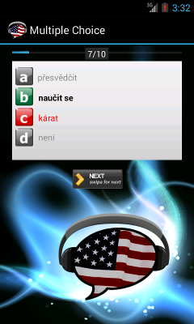

Klasický typ testu - pouze jedna odpověď je správná.
Po kliknutí na kartičku se zobrazí druhá strana, ve které budete mít na výběr ze čtyř možností. Použijte tlačítka A, B, C nebo D pod kartičkou a správná odpověď se ukáže po stisknutí. Správná odpověď je vždy zobrazena zeleně a zvýrazněna na kartičce. Pokud jste vybrali špatně, odpověď je zobrazena červeně. Posunutím kartičky vlevo nebo vpravo se zobrazí další slovíčko.
Cvičení je jednoduché, a proto je aktivované ve Vašem předaktivovaném nastavení. Cvičení je méně náročné než Spell Out, ale o něco náročnější než Browse Cards. Pokud má slovo více překladů, je zobrazen jen jeden z možných překladů.
Po zodpovězení můžete kartičku otočit, nebo jí posunout a zobrazit další kartičku.